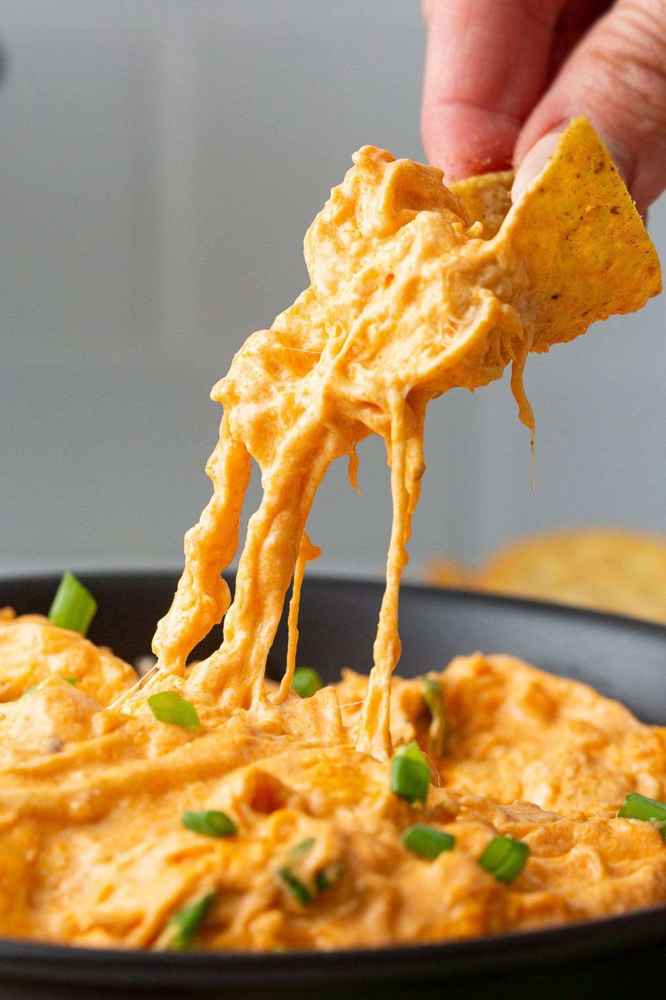

Buffalo Chicken Dip

Tasty Fun with a spicy kick!
This zesty dip is great with chips, crackers, tortillas, or even by itsefl.
You won't be able to get enough of the tangy, cheesy goodness!
Make sure to save some for yourself becuase this will disappear fast!
Ingredients
- 2 (10-ounce) cans of chunk chicken, drained
- 3/4 cup hot pepper sauce (such as Frank's RedHot)
- 2 (8-ounce) packages cream cheese, softened
- 1 cup ranch dressing
- 1 1/2 cups shredded Cheddar cheese
- 1 bunch of celery, cut into 4 inch pieces for serving (optional)
- 1 (8-ounce) box of crackers for serving (optional)
Steps
- Gather all ingredients.
- Heat chicken and hot pepper sauce in a skillet over medium heat until heated through, 3 to 5 minutes. Stir in cream cheese and ranch dressing. Cook and stir until will blended and warm, 3 to 5 minutes.
- Mix in 1/2 of the Cheddar cheese, and transfer the mixture to a slow cooker. Sprinkle the remaining cheese on top.
- Cover and cook on low until dip is hot and bubbly, about 35 minutes.
- Serve warm with celery sticks and crackers for dipping.
Enjoy!
Home